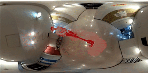

BINBIN XU
PhD Student
Department of Computing
Imperial College London
I am a PhD student at the Smart Robotics Lab, Imperial College London, working with Dr.
Stefan Leutenegger and Prof. Andrew Davison. I was previously a research intern at Facebook Reality Labs, with Dr. Lingni Ma.
My current research interest is to achieve an object-level SLAM system working in a
dynamic environment. I am also broadly interested in SLAM, robotics and computational photography.
Brief Bio
Before starting my PhD at Imperial College London, I received my Master degree in Precision Engineering from
the University of Tokyo in 2017, supervised by Assoc.
Prof. Atsushi Yamashita and Prof.
Hajime Asama. Before that, I got my Bachelor's degree in Information Engineering from South China
University of Technology in 2014.
SELECTED PUBLICATIONS
 |
Deep Probabilistic Feature-metric Tracking
Binbin Xu, Andrew J. Davison, Stefan Leutenegger IEEE Robotics and Automation Letters (RA-L), Vol. 6, No. 1, pp. 223-230, 2021 (ICRA 2021 presentation) paper / arxiv / code / video |
 |
MID-Fusion: Octree-based Object-Level Multi-Instance Dynamic SLAM
Binbin Xu, Wenbin Li, Dimos Tzoumanikas, Michael Bloesch, Andrew Davison, Stefan Leutenegger IEEE International Conference on Robotics and Automation (ICRA), 2019 paper / arxiv / video / rgb-jacobian / code / data |
|  |
Spatio-temporal Video Completion in Spherical Image Sequences
Binbin Xu, Sarthak Pathak, Hiromitsu Fujii, Atsushi Yamashita and Hajime Asama IEEE Robotics and Automation Letters (RA-L), Vol. 2, No. 4, pp. 2032-2039, 2017 paper / video |
HONORS
- Outstanding Master Thesis,
Department of Precision Engineering, The University of Tokyo, 2017 - JSME Fellow Award for Outstanding Young Engineers,
The Japan Society of Mechanical Engineers (JSME), 2016 - Honorable Mention Award,
2015 JSME/RMD International Conference on Advanced Mechatronics, 2015
Miscellaneous
- Living in China, Japan, and UK for many years, I am interested in exploring different cultures and currently fluent with Mandarin, English and Japanese.
- Outside of my research, I am also interested in travelling, climbing, and swimming.